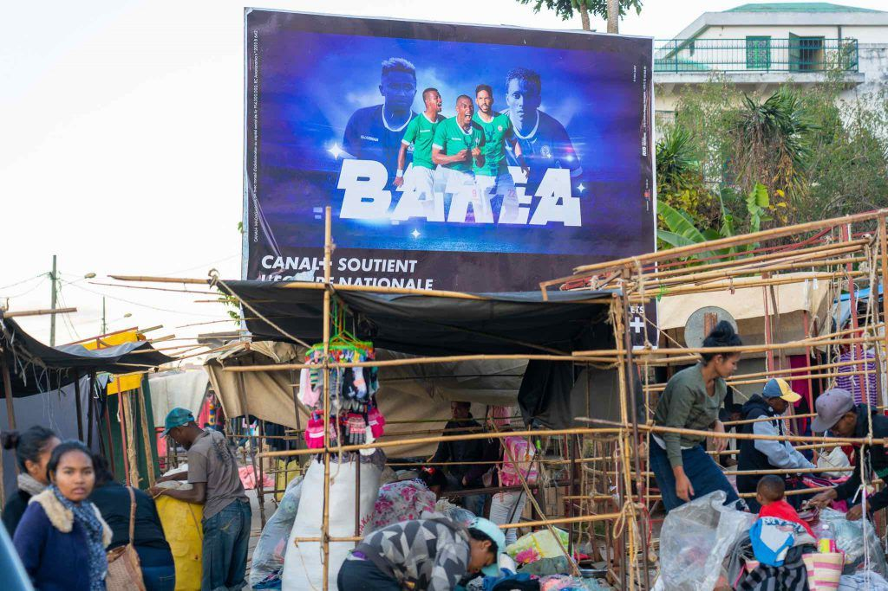
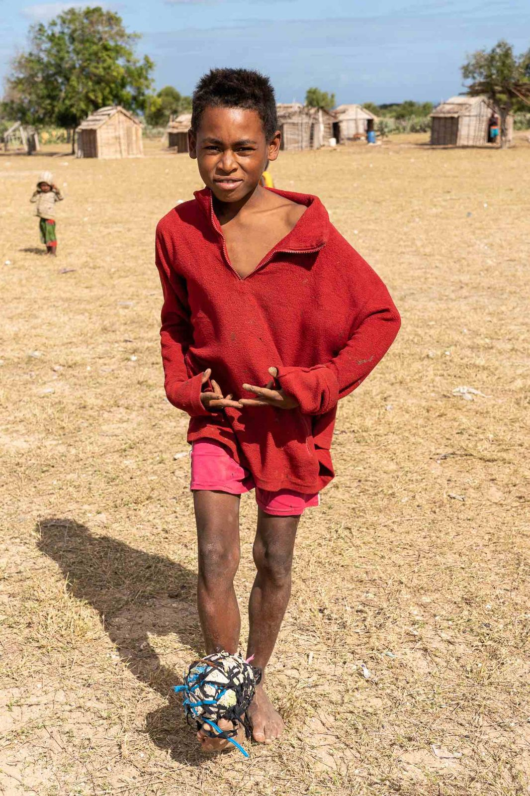
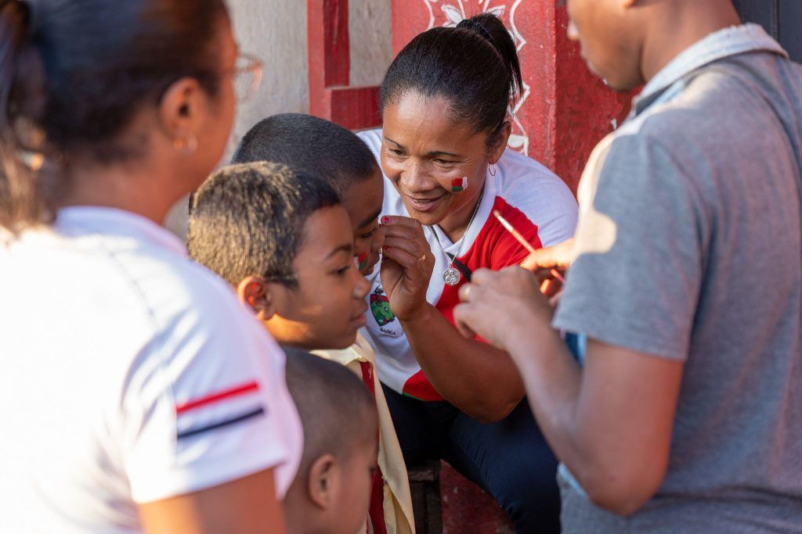
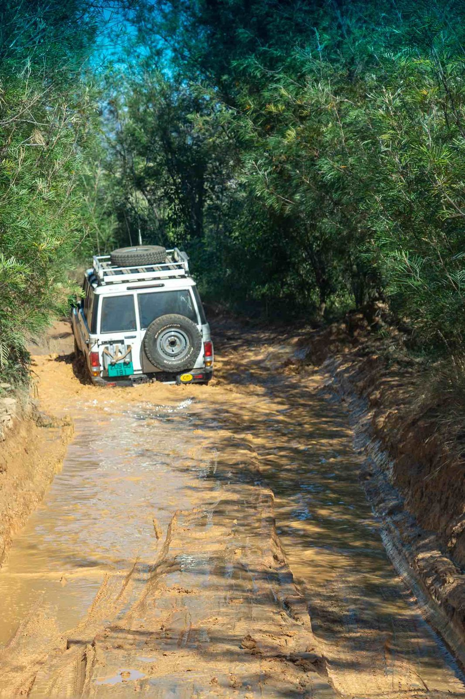
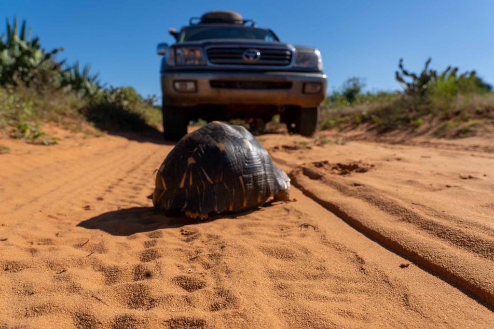
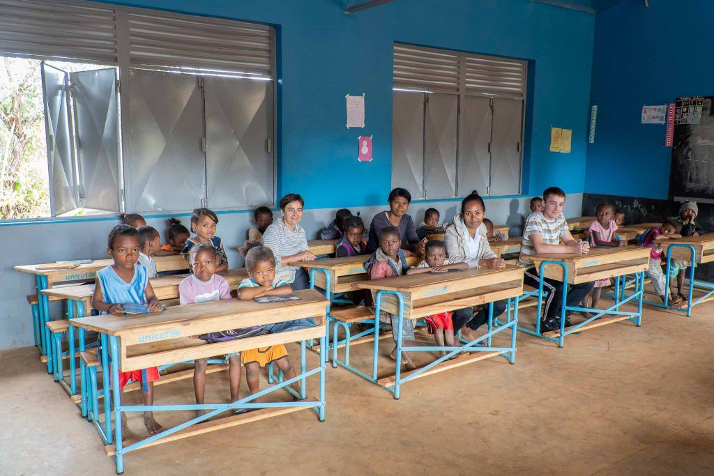
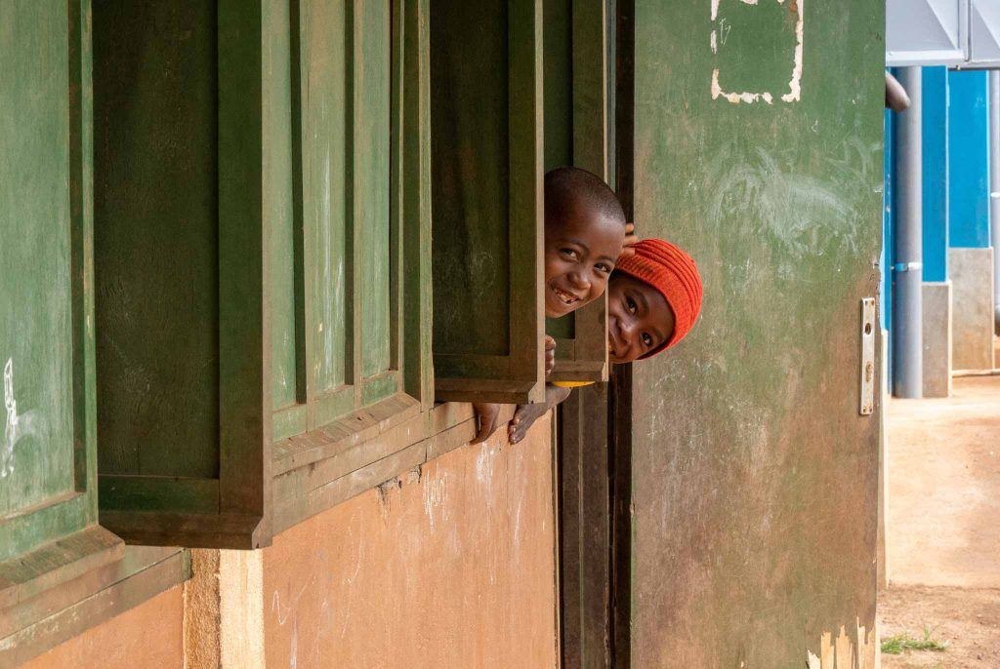
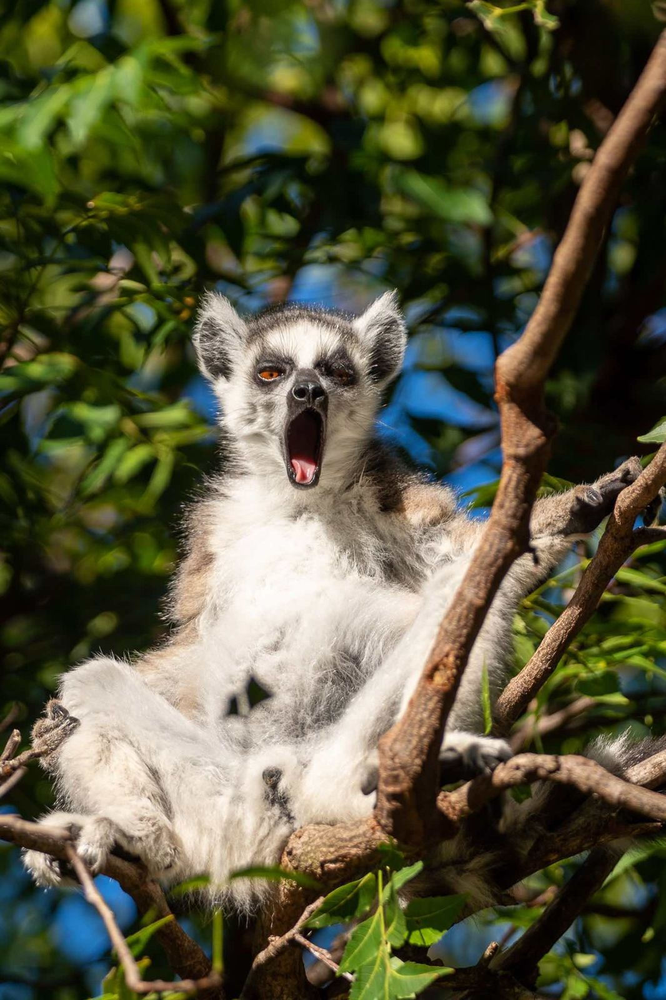

Ein Reisebericht zu: Madagaskar ein Land mit vielen Facetten
 Für unsere 6-wöchige Madagaskar-Reise stellte uns Ellen von PRIORI eine wunderbare, unseren Wünschen angepasste Reise durch den Süden der Insel zusammen – la grande boucle sud. Die Reise führte uns durchs Hochland nach Fianarantsoa, anschliessend mit dem Zug an die Ostküste nach Manakara. Über eine Piste die RN12 ging es zum südlichen Ende der Insel. Der Westküste entlang über Sandpisten sowie durch Dornenwälder gelangten wir nach Tulear. Über die RN7 ging es zurück in die Hauptstadt mit Abstechern in die Nationalparks bei Ranomafana und Andasibe.
Für unsere 6-wöchige Madagaskar-Reise stellte uns Ellen von PRIORI eine wunderbare, unseren Wünschen angepasste Reise durch den Süden der Insel zusammen – la grande boucle sud. Die Reise führte uns durchs Hochland nach Fianarantsoa, anschliessend mit dem Zug an die Ostküste nach Manakara. Über eine Piste die RN12 ging es zum südlichen Ende der Insel. Der Westküste entlang über Sandpisten sowie durch Dornenwälder gelangten wir nach Tulear. Über die RN7 ging es zurück in die Hauptstadt mit Abstechern in die Nationalparks bei Ranomafana und Andasibe.
Madagaskar im Fussballfieber

Kaum gelandet in Antananarivo fährt uns Anja, unser Fahrer, durch das Verkehrschaos zum Hotel Belvedere. Als uns ein laut hupender Motoradkonvoi entgegenkommt mit vielen Madagaskar-Fahnen, erklärt uns Anja, dass sich die Nationalelf des Landes das erste Mal für den Afrika-Cup Achtelfinal qualifiziert hat. Als wir uns am Abend auf die Suche nach einem Restaurant mit Fernseher machen wollen, kommt uns der Hotelmanager freudestrahlend nachgerannt und erklärte uns, dass er ein Gerät im Restaurant installiert habe.
So verbrachten wir einen vergnüglichen Fussball-Abend zusammen mit dem Hotelpersonal. Finalmente gewinnt Madagaskar gegen die DR Kongo und qualifizierte sich für den Viertelfinal. An Schlaf war nicht mehr zu denken, der Sieg wurde ausgelassen gefeiert.
In unserem Gepäck befanden sich 30 Fussbälle, welche uns vom FC Goldstern, dem Club unseres Sohnes, zur Verfügung gestellt wurden. In den Dörfern sind Lederfussbälle eine Rarität, die Kinder spielen mit selbstgebastelten Bällen, zusammengeschnürt aus Lumpen und Plastik. So waren unsere Bälle immer herzlich willkommen. Bei der ersten Ballübergabe in einem kleinen Dorf merkten wir bald, dass die Übergabe gar nicht so einfach ist wie wir gedacht haben. Anja klärte uns auf, dass der Ball über den Dorfchef an eine verantwortliche Person übergeben werden muss. Tatsächlich so funktionierte es ohne grosse Diskussionen und Tumulte.

Das ganze Land bereitete sich auf den Viertelfinal vor. Die T-Shirts der Nationalelf wurden stolz getragen und jeder wollte eine Madagaskarflagge auf der Wange. Leider verlor Madagaskar die Partie gegen Tunesien, aber es herrschte keine Katerstimmung – im Gegenteil, die Bevölkerung war sehr stolz auf ihr „Barea-Team“, benannt nach den Zebus.
Die Strassen Madagaskars

Die Strecke von Manakara nach Fort Dauphin, die RN12, bietet ein sehr konstrastreiches Programm, von gut ausgebauten Teerstrassen, kleinen baufälligen Holzbrücken, Fähren, knietiefen Schlammpartien, über felsige Pisten sowie Flussdurchquerungen wurde alles geboten. Kleine Holzbrücken inspizierten wir immer zuerst zu Fuss auf ihre Tragfähigkeit. Mit der Zeit wurden wir nachlässiger und schätzten die Lage in kurzer Zeit aus der Ferne ein.Beim Überqueren einer Holzbrücke krachte es plötzlich, das Hinterrad drehte durch und unser Landcruiser steckte fest. Ein Blick aus der geöffneten Autotür gab uns die Gewissheit, dass das Hinterrad durch die Tragbalken gebrochen war und in der Luft über dem Fluss hängte. Hilfe war rasch vor Ort, die Einheimischen des Dorfes kamen uns sofort zu Hilfe. Ein Rettungsteam von zehn jungen Männern unterlegte das eingebrochene Auto mit Holzplanken, die sie aus dem vorderen, intakten Teil der Brücke holten. Mit dem Wagenheber schafften sie dann jeweils wieder Platz, um eine weitere Planke unterzulegen.
Die Helfer versicherten uns, dass wir in 90 Minuten die Fahrt fortsetzen können. Dank der grossen Routine und Erfahrung der Dorfbewohner wurde dieser Zeitplan um 30 Minuten unterschritten. Nachdem der vordere Teil der Brücke wieder instand gestellt war, konnten wir von der Brücke runterfahren. Wir bedankten uns bei den Helfern mit Geschenken und bei unserem Fahrer, welcher uns zu diesem Erlebnis verholfen hatte.

Bei gewissen Matschpartien, aber auch felsigen Abschnitten konnten wir uns im Voraus nicht vorstellen, wie diese zu fahren sind. Aber Anja meisterte sämtliche tückischen Abschnitte des Weges mit Bravour. Die Strassen im westlichen Teil des Südens bestehen hauptsächlich aus Sandpisten. Auf beiden Seiten der Piste befinden sich Dornenwald und Kakteen, welche den Pneus arg zusetzen können. Das Tempo auf diesen Strecken wurde aber auch durch die vielen Schildkröten bestimmt, welche sich vorzugsweise auch auf diesen Wegen aufhielten. Trotz der misslichen Strassenverhältnisse sahen wir nach 4200 km in 6 Wochen keinen Verkehrsunfall. In Madagaskar gilt auch auf der Strasse „Mora Mora“.
Schulen in Madagaskar

Da sich in unserer dreiköpfigen Reisegruppe auch eine Pädagogin befand, stand natürlich auch der Besuch einer Schule auf unserer Wunschliste. Bei einer Dorfschule zwischen Manakara und Farafangana hielten wir an. Unser Fahrer war einmal mehr der Türöffner für ein tolles Erlebnis. Nach kurzer Nachfrage lud uns der Schuldirektor ein seine Schule zu besuchen. Die Gebäude und das Inventar sind von der UNICEF zur Verfügung gestellt, für den Betrieb und das Schulmaterial ist der Staat verantwortlich. Trotz der tiefen Schulgelder können es sich nicht alle leisten, die Kinder in die Schule zu schicken und die wirtschaftlich besser gestellten Familien schicken die Kinder in eine Privatschule.
Die Räume sind rudimentär eingerichtet, teilweise fehlen die Zwischenwände zum Nachbarsklassenzimmer. Die Lehrerinnen führten uns in ihre Klassenzimmer und es entstand ein fröhlicher Gesangswettbewerb von madagassischem und schweizerischem Liedgut. Die strahlenden Kinderaugen, die teilweise scheue Zurückhaltung der Kinder berührten uns. Die Kinder müssen lange Schulwege entlang der Strassen zurücklegen. Dies beschäftigt die Lehrerschaft sehr, da die Wege gefährlich sind. Aber auch die ausstehenden Gehälter des Kollegiums war ein Gesprächsthema mit der Lehrerschaft. Es gibt noch viel zu tun, um ein gut funktionierendes Schulsystem zu etablieren, dass allen Bevölkerungsschichten gerecht wird.

Im Südwesten von Madagaskar trafen wir auf toll eingerichtete Schulen, es sind dies die „abc domino“ – Schulen. Ein französischer, humanitärer Verein finanziert und betriebt diese, mit dem Ziel, die Schulstruktur in diesem ärmsten Teil des Landes aufzubauen. Nach dem Motto: „Bildung ist die mächtigste Waffe, mit der man die Welt verändern kann“ Zitat – Nelson Mandela.
Flora und Fauna der Insel

Unbestrittenes Highlight der Insel nebst der Bevölkerung, sind die vielen Nationalparks. Beim Eingang muss man jeweils einen Führer mitbuchen für eine Tour. Dank den geschulten Augen der Führer sahen wir Chamäleons, Baby-Skorpione, Geckos, Madagaskar Boas, Stabschrecken etc., welche wir alleine nie gefunden hätten. Das fundierte Wissen der Führer bereichert die Ausflüge. Die vielen endemischen Tier- und Pflanzenarten machen den Besuch zu einem grossen Erlebnis.Wir bedanken uns beim PRIORI-Team in Basel und Madagaskar für die wundervolle Zeit auf der Insel. Ganz besonders auch dem Fahrer Anja, für seine tolle und umsichtige Fahrleistung und die unbeschwerte Zeit die wir mit ihm verbringen durften.
Christine, Pascal und Romain